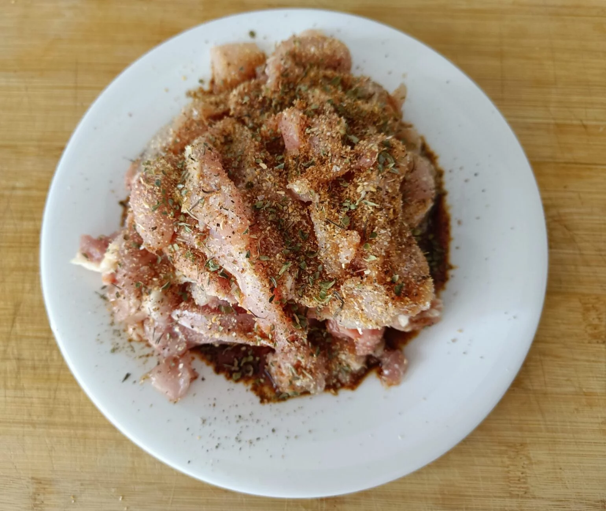
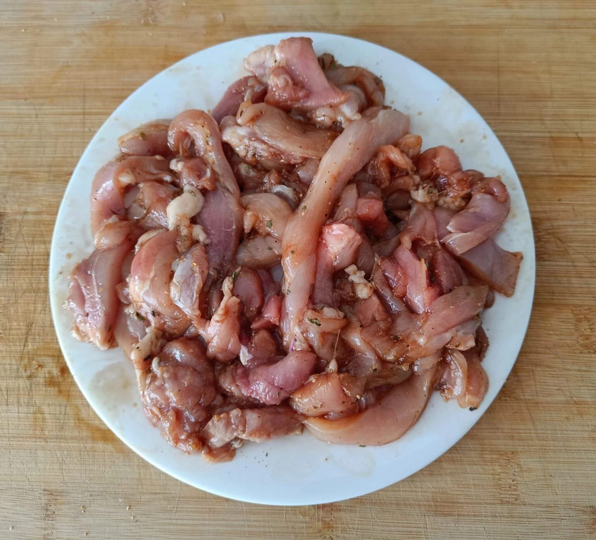
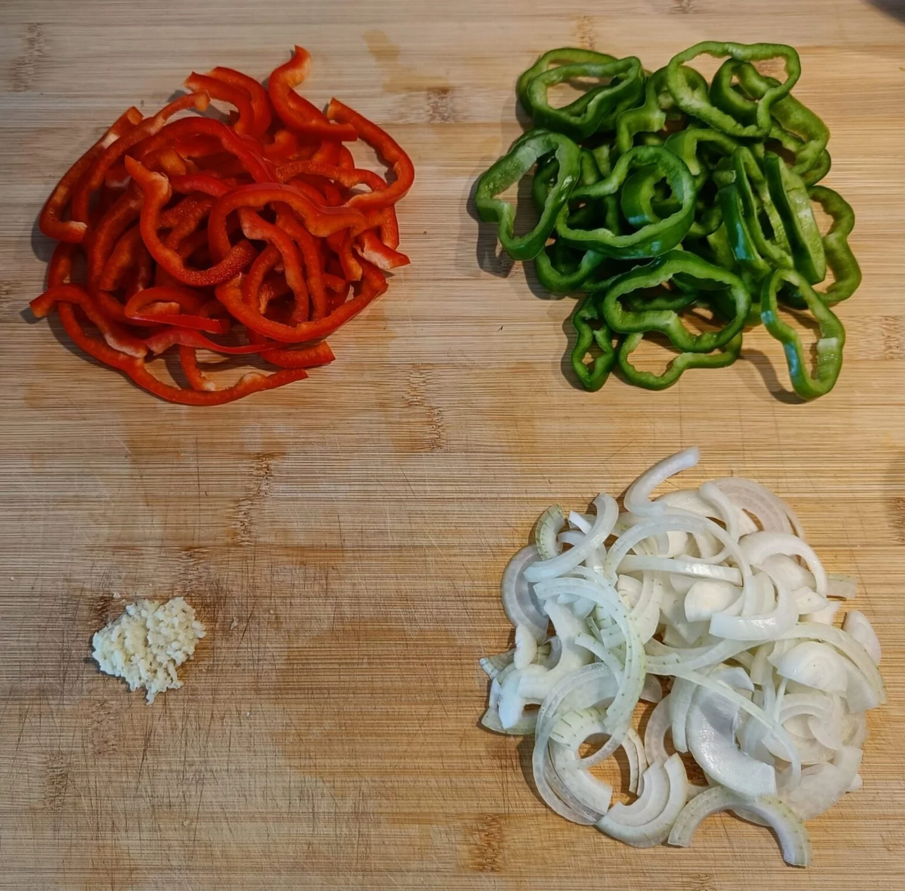
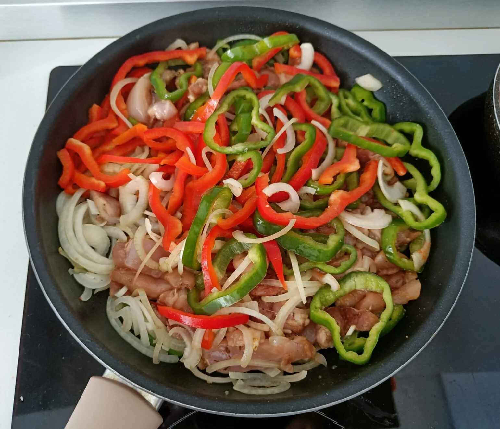
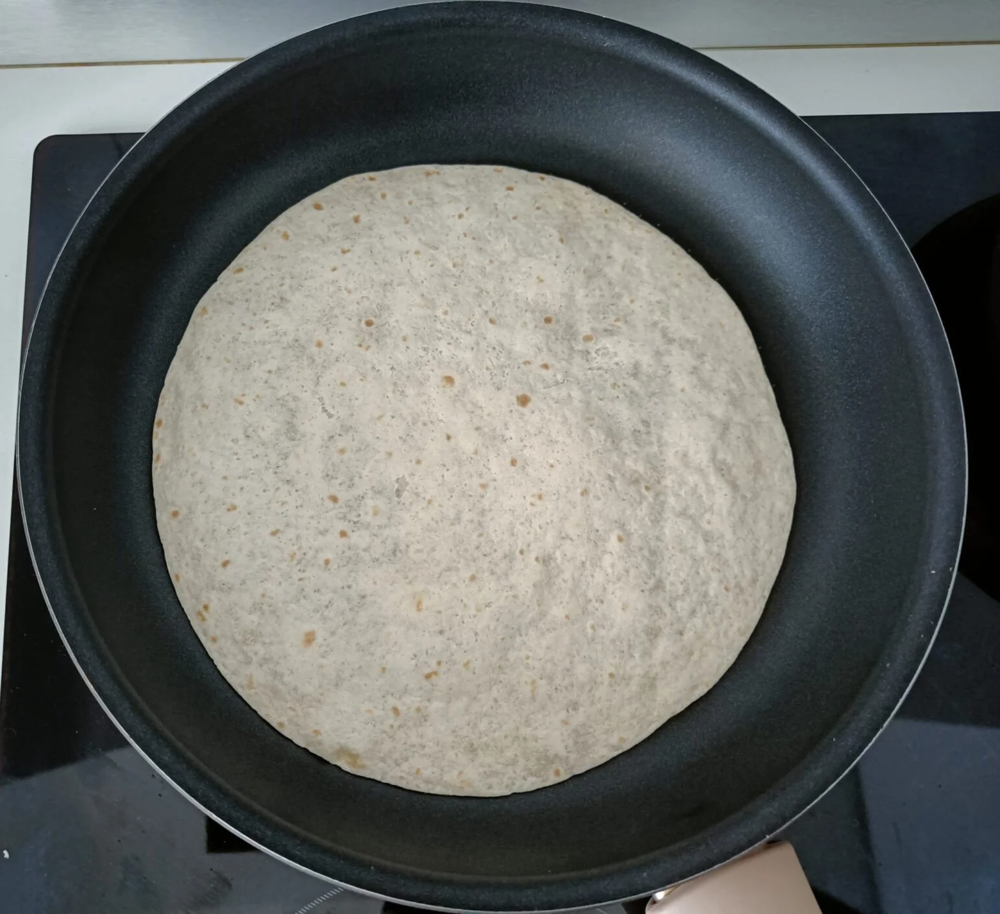
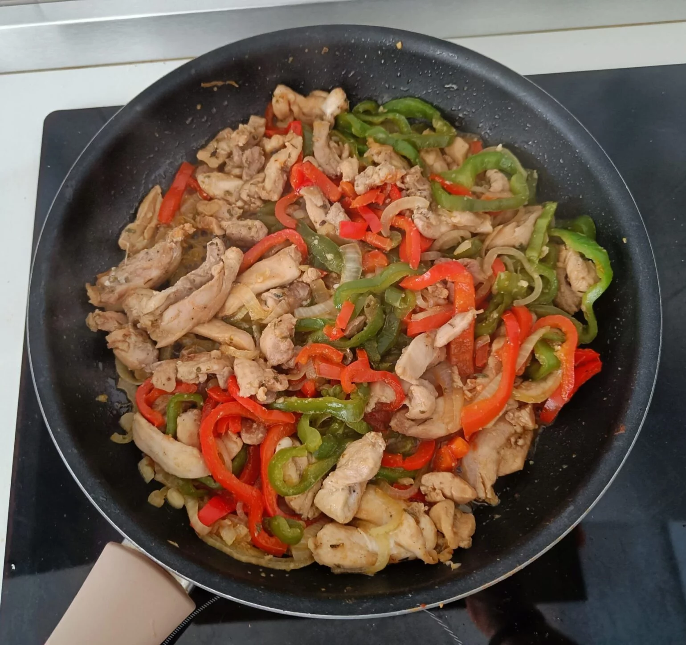
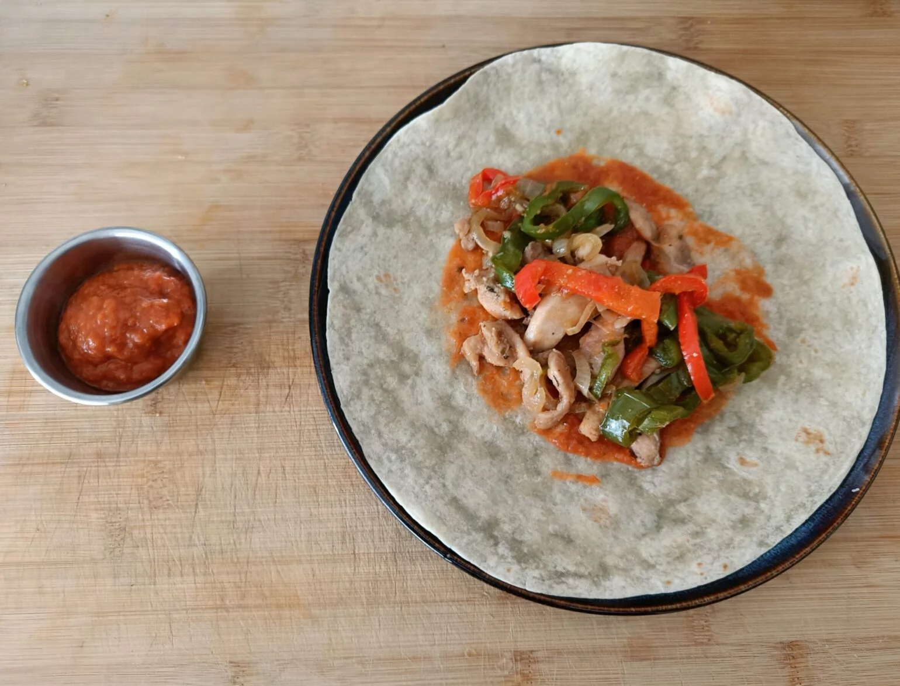

En primer lugar cortamos el pollo en tiras finas y añadimos los siguientes ingredientes: Un chorrito de salsa de soja, media cucharadita de tomillo seco, media cucharadita de orégano seco, media cucharadita de pimienta negra recién molida, media cucharadita de cebolla en polvo, media cucharadita de ajo en polvo, media cucharadita de sal y media cucharadita de sazonador para fajitas.
Una vez añadidos los ingredientes para la marinada de las fajitas, añadimos un chorrito de aceite de oliva y masajeamos el pollo para integrar las especias.Dejamos reposar el pollo media hora en la nevera, como mínimo. Es aconsejable dejarlo un par de horas para acrecentar los sabores. Lo colocaremos en un bowl, bien tapado con papel film o una tapa de silicona.
En primer lugar limpiamos nuestros pimientos eliminando las venas y el pedúnculo, pelamos nuestra cebolla y nuestro ajo. Una vez hecho esto cortamos los pimientos y la cebolla en juliana, y el ajo lo prensamos con un prensa ajos o lo picamos finamente.
Con nuestra carne marinada y nuestros vegetales cortados procederemos a cocinar todos los ingredientes a fuego medio en una sarten grande (en mi inducción valor 5 sobre 9). En primer lugar añadiremos los vegetales con un poco mas de sal y a continuación añadiremos la carne salteando todos los elementos un par de minutos.
Cuando al guiso le queden unos cinco minutos para estar listo procederemos a calentar las tortillas ligeramente en una sarten a fuego medio. Solo las cocinaremos un poco para que cojan un poco de dureza y soporten adecuadamente la salsa y los ingredientes, además de estar calientes para que sea un bocado mas placentero.
Una vez pasen los dos minutos de salteado añadiremos 50 ml de agua para ayudar a ablandar la carne y los vegetales sin que se nos pasen. Lo cocinamos moviendo de vez en cuando alrededor de 15 o 20 minutos y estará listo cuando haya perdido casi todo el liquido.
Únicamente queda montar nuestras deliciosas fajitas de pollo. A mi me gusta añadirle esta deliciosa salsa casera Salsa mexicana para fajitas, la cual le aportara un extra de sabor y de jugosidad. Añadimos salsa e ingredientes al gusto y solo queda disfrutar de nuestra comida. ¡Buen provecho!
